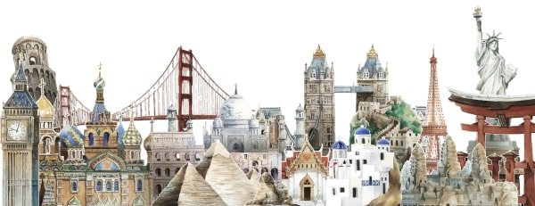

Maravillas del Mundo
 Watercolor vector created by rawpixel.com - www.freepik.com¿Qué es una maravilla
Se le denomina maravilla a un suceso o cosa que causa admiración en la gente. Las maravillas del mundo son aquellas construcciones o formaciones que, gracias a su magnífica forma arquitectonica o morfología son admiradas por el mundo entero y constantemente se cuestiona su metodo de construcción o formación, ya que cuentan con dimensiones y alturas increíbles que asombran a cualquier persona
Existe una buena cantidad de construcciones y formaciones naturales que cumplen con estos criterios, por eso se han creado listas donde se repasan las maravillas del mundo antiguo, moderno y natural. Dentro de estas podemos encontrar asombrosas construcciones tales como las piramides de Guiza en Egipto, imponenetes esculturas como el Cristo Redentor en Brasil o grandes formaciones naturales como las Cataratas de Iguazu en Argentina
A continuación presentamos los 3 listados diferentes de maravillas que se han creado a lo largo de la historia de la humanidad para definir las construcciones mas asombrosas en su momento. Adicionalmente, se ha añadido una sección con una recopilación de estructuras actuales que aunque no fueron incluídas en los listados, son dignas de ser mencionadas.